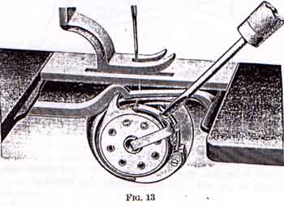
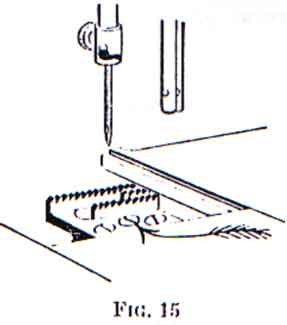
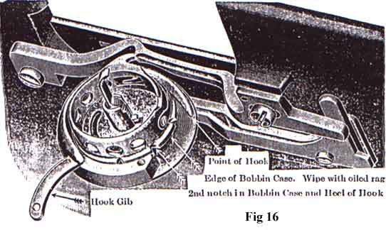
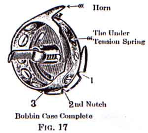

Have both threads passed under the presser foot at the side (see Fig 9), place the cloth under the presser foot, and let down the presser lifter. Start the machine by turning the balance wheel from you. Do not pull or push the work, the machine moves it.
For ordinary stitching the upper and under threads should be locked in the center of the thickness of the material as shown in Fig 10.
If the upper thread is held too tightly by its tension, or if the under thread is too loose, the thread will lie straight along the upper surface of the material as shown in Fig 11.
If the under tension is too tight or the upper tension too loose, the thread will lie straight along the under side of the material as shown in Fig.12
Regulate the tension of the upper thread by turning the top of the tension nut toward you to tighten, the other way to loosen the tension (B, see Fig 7). When the presser foot lifter is down the upper tension may be teasted by hand. Do not try to adjust the upper tension when the presser lifter is up. When making a very long stitch, the best tension is obtained by using the coarse throat plate instead of the fine one which is usually in the machine.

To regulate the under tension, remove the bed slide (front), turn the machine until the hook points toward you and the hook gib is below the latch (see Fig 13). The tension is regulated by the screw in the center of the spring above the latch. With the small screw driver turn this screw one-quarter or one-half around to the right to tighten, or to the left to loosen the tension. The under tension, when once regulated, will rarely require any change, therefore, the proper relation of upper and under tension should be produced by changes of the upper tension only. For general work the tension on the under thread should be medium.
Stop the machine while the needle is rising, but before it is out of the material, raise the presser foot and turn the corner, using the needle as a pivot.
To remove the work, raise the presser lifter; turn the balance wheel from you until the point of the needle going down reaches the presser foot, bringing the take-up lever to its highest position. Draw the work from you until you can draw the threads into the thread cutter. If the threads do not draw out easily, the needle is not in position, as directed. If the machine is stopped and held as directed, the needle will not unthread when you start to sew if only a short end is left through the needle. For convenience in taking out the work, the tension of the upper thread is released whenever the presser lifter is raised, but it is not released by the rising of the presser foot a thick goods or seams pass under the presser foot.
In sewing, if elasticity is required, as on bias seams or very elastic material, hold the work back slightly, while sewing, to keep the cloth stretched.
The length of stitch is regulated by the feed regulating thumb nut, at the base of the arm. Loosen the thumb nut and push it to the right to lengthen, or to the left to shorten the stitch, then tighten it firmly.
Turn the large presser bar thumb screw (G, see Fig 7) to the right to make the pressure heavier, or to the left to make it lighter; the pressure should be only heavy enough to prevent the material rising with the needle and to insure the feed moving the work along evenly; a heavier pressure would make the machine run harder and be of no benefit.
Oil at all places indicated by arrows and wherever there is friction. Good oil is the life of a machine and should be regularly used on any surface of metal which comes in movable contact with another surface. There are four holes for oil in the upper surface of the arm, one near the balance wheel, one above the take-up lever hinge and screw, one large and one small oil hole back of the needle bar. Oil through the large hole when the needle bar is at its lowest point to oil the groove in the cam for the take-up lever roller.
Put a drop of oil in the oil hole under the arm near its base to oil the hook shaft bearing (back) and a drop of oil into the hole in the bed slide (back) to oil the hook shaft bearing (front). Move the arm cap, which is near the balance wheel, to one side and oil the connection which drives the hook shaft, also insert the oil can spout into the large hole below the balance wheel to oil the slide which guides the connection. Loosen the balance wheel nut and oil the loose pulley which permits the belt to wind the bobbin without running the machine (see Fig 4).
The parts on the under side of the machine may best be cleaned and oiled by removing the belt and tipping the machine back as shown in Fig 14. Remove the face plate by loosening the large screw near tension pulley (B, see Fig 7), raise the face plate and slip it off over the head of the screw, within the space thus uncovered can be seen the needle bar and its connecting link, the presser bar and the mechanism that operates the take-up lever; put one drop of oil into each of the oil holes and joints, also upon the needle bar and presser bar where they enter the holes into which they are fitted. A very little oil must be occasionally put uopn the edge of the bobbin case, with an oiled rag to prevent a clicking sound (see Fig 16)
The stand must be oiled at each end of the pitman and hand wheel shaft. After oiling, raise the presser foot and run the machine rapidly a minute; then wipe off all superfluous oil, to prevent soiling the goods. If the machine runs hard at any time, it is certain that some part needs oiling. Never run the machine with the presser foot down, except when sewing, as it will scratch and dull the feed points.
If the machine has been standing a long time without use, benzine should be used to dissolve and clean out the old oil; then run the machine rapidly a few moments, or until it runs freely, wipe clean and then oil as above directed with a fresh sewing machine oil put up by The Singer Manufacturing Company.
Remove the needle, presser foot and thoat plate. Clean all of the parts about the feed bar, hook and bobbin case, and oil all of the parts where there is friction.
Should the feed dog or feed bar become worn by long use, leaving the points too low, they may be raised by turning the middle screw to the right. Turning the screw to the left will lower them (see arrow point in Fig 15). The points should rise about one-thirty-second of an inch above the plate, or enough to raise the hemmer slightly when it is in the machine.
Raise the presser lifter and loosen screw (T-B, see Fig 9), then draw the presser foot down and out.

Fig 16 shows the gib open, and the heel of the hook in line with the second notch in the bobbin case, which position allows the bobbin case to be lifted out easily.
To remove the bobbin case from the hook to thoroughly clean the bobbin case and hook, turn the balance wheel until the heel of the hook is in line with the second notch in the bobbin case, remove the screw at the end of the hook gob, and open the hook gib, as shown in Fig 16, then lift out the bobbin case.
The back of the bobbin case should be kept clean to prevent soiling the thread or obstructing the loop. See that there is no lint or dirt under the tension spring (see Fig 17).
When returning the bobbin case to the hook, be sure to have the horn in the notch of the bobbin case case stop bar, and the second notch of the case at the heel of the hook, then close the hook gib and turn the screw in firmly. Be careful not to damage the head of the screw.
The function of the thread controller spring is to hold back the slack of the upper thread until the eye of the needle reaches the goods in its descent.
If the pressure of the spring on the thread is too weak or too strong, remove the face plate, loosen the stud set screw near (C, see Fig 7) and turn the stud to increase or decrease the pressure of the spring on the thread and tighten the stud set screw to hold the stud in the position desired. For general work the spring is set correctly at the factory.
Remove the entire thread controller by taking out screw (H, see Fig 7); then take out screw (I, be careful not to lose the small roller) and you will find the spring is released; carefully note the way the spring comes out. Place the new spring in its position aand put back the screw. Next put the entire thread controller and spring on the machine, taking particular care to slide the little tail, which you will find on the coil of the spring, into the notch in the stud over which the spring slides. Do not under any circumstances alter any other screws or adjustments. The small roller should be oiled occasionally.
Needles for machines of Class 9w are of Class and Variety 9 N 1 and are made in sizes suitable for the different sizes of thread commonly used. The number of the needle is marked upon the shank.
Orders for needled must specify the quantity required, the size, also the class and variety numbers separated by N. The following are details of an intelligible order: "One Doz. No. 4 - 9 N 1 Needles"
|
SIZES OF NEEDLES
|
CLASS OF WORK TO SEW
|
SIZES OF COTTON, LINEN OR SILK
|
|
2
|
Very thin Muslin, Cambrics, Linens, etc.
|
100 to 150 Cotton 000 & 00 Silk Twist |
|
3
|
Very fine Calicoes, Linens, Shirtings, fine Silk
Goods, etc.
|
80 to 100 Cotton 0 Silk Twist |
|
4
|
Shirtings, Sheetings, Bleached Calicoes, Muslins,
Silk and general domestic goods and all classes of general work.
|
60 to 80 Cotton A and B Silk Twist |
|
5
|
All kinds of heavy Calicoes, light Woolen Goods,
heavy Silk, Seaming, Stitching, etc.
|
40 to 60 Cotton C Silk Twist |
|
6
|
Tickings, Woolen Goods, Trousers, Boy's Clothing,
Corsets, Cloaks, Mantles, etc.
|
24 to 40 Cotton D Silk Twist 60 to 80 Linen |
For ordinary work use the same size of thread in the bobbin as in the needle. In using slack twist or uneven silk, should it be frayed or roughened, the needle is too fine or too sharp, or has a hooked point, made by striking the throat plate. A hook may be easily honed off the needle.
To make a smooth, even stitch with your machine, it is necessary to use good, firmly twisted and smoothly finished thread, that passes freely through the eye of the needle. No other needles will give as good results and satisfaction as those recommended above.
Supplies of parts or needles for the machine can be purchased at any Singer shop, or ordered by mail; money, or post office order covering their value, including postage should be enclosed with the order, which will then receive immediate attention, and be promptly filled and forwarded by mail or express.